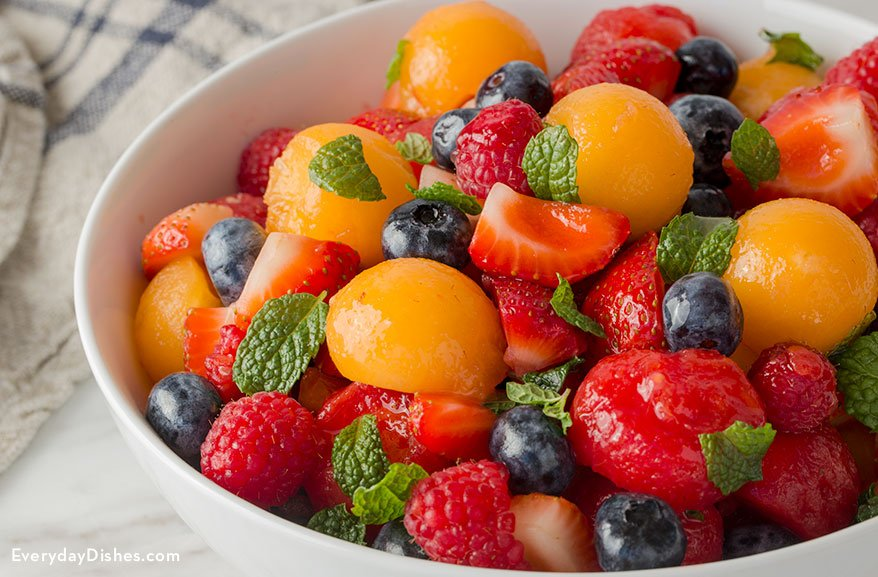

Mojito Fruit Salad

Description
Unique! Refreshing, minty salad with a sensational flavor! Big hit!
Ingredients
- 1 cup cubed seeded watermelon
- 1 cup seedless grapes
- 1 cup cubed cantaloupe
- 1 cup hulled and quartered strawberries
- 1 cup fresh blueberries
- 3 sprigs fresh mint
- 2 teaspoons white sugar
- 3 tablespoons fresh lime juice
Steps
- Mix the watermelon, grapes, cantaloupe, strawberries, and kiwi in a bowl with a tight-fitting lid; top with the blueberries.
- Stir the mint, sugar, and lime juice together in a bowl, crushing the mint with the back of a spoon while mixing to extract flavors; pour over the fruit mixture. Seal the bowl with lid and refrigerate at least 1 hour.
- Just before serving, gently flip the sealed bowl several times to coat the fruit with the dressing.